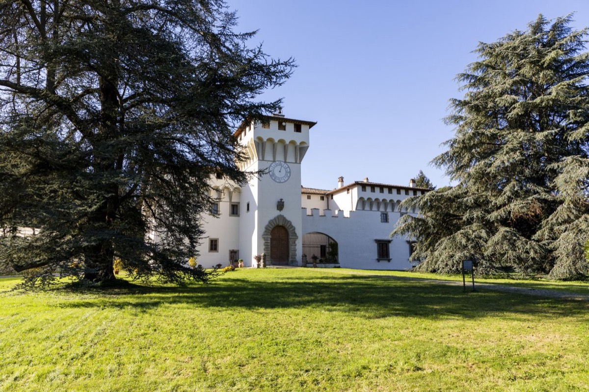

Percorso 3 · Culturale
Mugello mediceo
Dalle origini dei Medici, alle loro ville, alla scoperta della famiglia che ha cambiato un'era
A PiediIn BiciCon il Tuo Cane
A Piedi
- Durata
- 1 giorno
- Lunghezza
- 23 Km
- Difficoltà
- Facile
- Dislivello
- 1017 Mt
MTB/EBIKE
- Durata
- Mezza Giornata
- Lunghezza
- 21 Km
- Difficoltà
- Facile
- Dislivello
- 937 Mt
Traccia (23,1 km)Variante MTB (21,4 km)PartenzaArrivo
Porta il percorso con te
Scarica la traccia per il navigatore o per un'app come Komoot, OsmAnd o Wikiloc.
Traccia GPX MTBTraccia GPXScheda completa su Orme del Mugello
Sentieri e cammini attraversati
- Sentieri CAI
- nr. 21 - nr. 17 - nr. 19
- Cammini
- SOFT 8 - Via degli Dei - SOFT 7
Descrizione del percorso
Leggi il racconto di Orme del Mugello
Il percorso ha il suo inizio a Cavallina (260 m), una piccola ma popolosa frazione del comune di Barberino di Mugello. Primo punto toccato è la Villa Torre il Palagio. La villa è un’elegante residenza storica legata alla famiglia Medici, immersa in un paesaggio suggestivo del Mugello. Le sue origini risalgono al XIII-XIV secolo, quando fu costruita come torre fortificata per la difesa e il controllo delle vie di comunicazione. Con il Rinascimento, la villa venne trasformata in una dimora signorile, arricchita da elementi architettonici raffinati grazie al patrocinio dei Medici, che la usarono come residenza di caccia e luogo di sosta nei loro spostamenti. Tra il XV e il XVI secolo, divenne anche un centro amministrativo delle loro proprietà terriere. Durante il governo di Cosimo I de’ Medici, la villa fu abbellita con giardini all’italiana, loggiati e arredi preziosi. Conserva ancora elementi medievali, come mura massicce e feritoie, oltre a decorazioni rinascimentali, tra cui affreschi e soffitti a cassettoni. Nel tempo ha ospitato nobili, artisti e studiosi della corte medicea. Una leggenda racconta che sia abitata dallo spirito di una giovane nobildonna, che si aggira nei corridoi nelle notti di luna piena, alimentando il mistero e il fascino di questa storica residenza.
Dalla Villa si costeggia il Lago di Bilancino e dopo una ripida salita, si giunge alla Pieve di San Giovanni in Petroio.
La Chiesa di San Giovanni in Petroio (280 m), situata su un’altura con vista sul Lago di Bilancino, è un luogo ricco di storia e spiritualità. Le sue origini risalgono al XII secolo, quando era una pieve rurale destinata alle comunità locali. Il nome “Petroio” deriva dal latino petra, in riferimento alla natura rocciosa del terreno.
Durante il Rinascimento, con l’ascesa della famiglia Medici, la chiesa acquisì maggiore importanza. I Medici, profondamente legati al Mugello, finanziarono restauri e decorazioni, trasformandola in un punto di riferimento religioso e culturale. Sotto il Granducato di Cosimo I, furono eseguiti interventi architettonici e aggiunte opere d’arte, molte delle quali oggi disperse.
Oltre al valore storico, la chiesa gode di una posizione panoramica che la rende una meta ideale per escursionisti. In passato, era un luogo di sosta per i pellegrini diretti a Firenze. Secondo una leggenda, un viandante smarrito trovò rifugio nella chiesa e, pregando, fu guidato da una luce misteriosa. Ancora oggi, si racconta che nelle notti ventose il suono delle campane riecheggi misteriosamente nella valle.
Dopo un breve tratto lungo il sentiero (SOFT 8), si giunge al Castello del Trebbio (435 m), a pochi chilometri da San Piero a Sieve.
Il Castello del Trebbio è una delle più affascinanti residenze storiche della regione e testimonia il dominio dei Medici. Patrimonio UNESCO, unisce l’architettura militare medievale all’eleganza rinascimentale voluta dai suoi celebri proprietari.
Edificato nel XII secolo come roccaforte strategica, passò ai Medici nel XIV secolo, diventando una residenza fortificata. Giovanni di Bicci lo usò per amministrare le sue terre, mentre Cosimo il Vecchio e Lorenzo il Magnifico lo trasformarono in rifugio e luogo d’incontro per intellettuali.
Dal Castello del Trebbio si raggiunge, tornando sui propri passi per qualche metro, un altro simbolo della presenza della famiglia dei Medici nel Mugello, il rinomato Castello di Cafaggiolo.
Chi percorre il cammino in mountain bike o con qualsiasi altro mezzo non può raggiungere direttamente il castello tramite sentiero. La traccia in versione MTB, prosegue lungo la forestale del Castello del Trebbio e, una volta arrivati sulla strada provinciale, si può eventualmente percorrere la strada asfaltata in direzione di Barberino di Mugello per visitarlo esternamente.
Il Castello di Cafaggiolo è una delle più prestigiose residenze medicee e un capolavoro dell’architettura rinascimentale toscana. Anch’esso dichiarato Patrimonio UNESCO, unisce la solidità delle sue origini medievali con l’eleganza rinascimentale voluta dai Medici, che lo trasformarono in un luogo di villeggiatura e cultura. Nel XV secolo, Cosimo il Vecchio affidò la ristrutturazione a Michelozzo, che lo convertì in una raffinata villa. Lorenzo il Magnifico vi soggiornò spesso, accogliendo filosofi e artisti, rendendolo un centro di pensiero umanistico. Oltre agli uomini di corte, anche le donne della famiglia Medici trascorrevano qui lunghi periodi immersi nella tranquillità della campagna. Cafaggiolo fu un punto di riferimento per la cultura rinascimentale, ospitando intellettuali come Marsilio Ficino e Pico della Mirandola. Qui nacquero celebri opere, tra cui scritti neoplatonici e poemi di Poliziano e Lorenzo il Magnifico. Il castello era anche teatro di feste, musica e spettacoli teatrali, arricchiti dalle celebri maioliche prodotte nella sua fornace. Oggi, Cafaggiolo mantiene intatto il suo fascino, testimoniando il ruolo centrale che ebbe nella vita politica e culturale del Rinascimento fiorentino.
Ritornando sui nostri passi, si prosegue in direzione San Piero a Sieve. Siamo ormai alle porte del paese, ma prima di immetterci nelle sue tortuose vie, non possiamo non fare un giro intorno alle mura dell’imponente Fortezza di San Martino (310 m).
Situata su un’altura dominante San Piero a Sieve, la Fortezza di San Martino è una delle più imponenti costruzioni militari volute dai Medici nel Mugello. Realizzata nella seconda metà del XVI secolo su ordine di Cosimo I de’ Medici, aveva lo scopo di difendere Firenze e controllare le vie di comunicazione con il nord della Toscana. Oggi, sebbene in parte abbandonata, conserva il suo fascino ed è una meta interessante per gli appassionati di storia. Progettata da Bernardo Buontalenti, la fortezza univa estetica e strategia militare con possenti mura, bastioni e un avanzato sistema difensivo. La sua posizione elevata garantiva un’ottima visibilità per prevenire attacchi nemici. All’interno ospitava caserme, depositi di armi e alloggi per le guarnigioni, rendendola un avamposto autosufficiente. Mai completata del tutto, perse importanza con il declino della strategia militare tradizionale nel XVIII secolo. Ancora oggi si racconta dell’esistenza di passaggi segreti e tunnel sotterranei.
Si giunge dentro il paese di San Piero a Sieve (220 m). Tra i luoghi da non perdere c’è sicuramente la Pieve di San Pietro uno dei luoghi di culto più antichi del Mugello, con oltre mille anni di storia. Costruita nell’XI secolo in un punto strategico tra Firenze, la Romagna e il Casentino, divenne il centro religioso e sociale del borgo. Il termine "pieve" indica il suo ruolo battesimale per la comunità locale.
Durante il dominio dei Medici, la chiesa mantenne la sua importanza ed è ancora oggi un esempio di architettura romanica con colonne in pietra serena, un imponente campanile medievale e opere d’arte rinascimentali. All’interno si trovano affreschi, un fonte battesimale in pietra e un crocifisso ligneo medievale. Frequentata da personaggi illustri, tra cui forse San Giovanni Gualberto, la pieve è avvolta da leggende, come quella di sotterranei usati per nascondere tesori durante le guerre. Ancora oggi conserva il suo fascino storico e spirituale.
Attraversato il Parco Antonio Berti, non solo luogo che unisce il verde del paesaggio alla memoria di un grande artista, ma anche punto strategico per tutti gli escursionisti che intraprendono la Via degli Dei, ci lasciamo il paese alle spalle e percorsi pochi centinaia di metri, si arriva a San Giusto a Fortuna, per poi immergerci completamente nelle campagne mugellane e in un bosco tipico per queste latitudini.
La Chiesa di San Giusto a Fortuna risale al XII secolo ed è legata ai Vescovi fiorentini e alle famiglie nobili locali. Restaurata nel Quattrocento da Bernardo Rossellino, conserva opere d’arte come la Madonna dell’Aiuto e un Crocifisso ligneo. Ha subito vari restauri, tra cui quelli del Settecento e post-terremoto nel 1919. Il suo campanile quadrangolare e l’orientamento originale dell’altare la rendono unica nel Mugello. La chiesa è connessa alla famiglia Pitti, che possedeva una villa nei dintorni, aggiungendo un ulteriore valore storico al sito.
Da una chiesa ad un Convento, quello di Bosco ai Frati meta ultima del percorso. Il Convento di San Bonaventura a Bosco ai Frati (275 m) è uno dei più antichi conventi francescani della Toscana. Le sue origini risalgono all'epoca longobarda (VII-VIII secolo), ma nel XIII secolo divenne un centro di preghiera e ospitalità per i frati francescani. La sua rilevanza crebbe nel XV secolo grazie al sostegno dei Medici, che finanziarono il suo rinnovamento. Cosimo il Vecchio de' Medici affidò la ristrutturazione all'architetto Michelozzo, trasformando il convento in un importante centro spirituale e culturale. Durante il regno dei Medici, il convento divenne una residenza per la famiglia granducale, che vi si ritirava per momenti di spiritualità. Il convento ospita oggi un ricco patrimonio artistico, tra cui il celebre Crocifisso ligneo di Donatello, capolavoro di grande intensità spirituale. Si trovano anche opere della scuola fiorentina, arredi sacri, antichi codici miniati e una biblioteca con preziosi manoscritti. Il Convento di San Bonaventura resta un simbolo della fusione tra arte, religiosità e storia, mantenendo la sua importanza anche nel presente.
La leggenda del Regolo
La leggenda del Regolo della fortezza di San Piero a Sieve narra di un enorme serpente (per alcuni invece un giovane soldato morto tradito dai suoi commilitoni), chiamato "Regolo" , che terrorizzava gli abitanti del borgo e delle campagne circostanti. Si diceva che la creatura fosse dotata di un potere ipnotico capace di immobilizzare chiunque incrociasse il suo sguardo. Secondo la tradizione, il Regolo si aggirava nei dintorni del paese, avvolgendosi attorno ai tronchi degli alberi e spaventando contadini e viandanti. La leggenda vuole che, dopo anni di paura, un coraggioso abitante del luogo – forse un monaco o un cacciatore – riuscì a sconfiggere il serpente con un’astuzia o una benedizione divina. Da allora, il Regolo scomparve, e San Piero a Sieve tornò a essere un luogo sicuro e tranquillo.
Dormire, mangiare e prodotti lungo il percorso
Strutture ricettive (12)
- Affittacamere Via Degli Dei contatti
- Agriturismo Borgo Scaffaia contatti
- Agriturismo Latera - Agricampeggio contatti
- BeB LA CASA DI COSIMO contatti
- BeB LA PIEVE contatti
- BeB VACANZE IN MUGELLO contatti
- Camping Village Mugello Verde contatti
- Casa Amerigo contatti
- Case Montui contatti
- La Felicina contatti
- La Terrazza contatti
- Villa Del Lago Appartamenti contatti
Aziende (4)
- B.beb La Casa di Cosimo
- Camping Village Mugello Verde contatti
- Latera contatti
- Tenuta Cafaggiolo contatti
Il nome della struttura porta al suo sito web; "contatti" apre la scheda con telefono e mail sul portale turistico Mugello Toscana (per chi non ha un sito c'è solo quella). Le aziende portano ai loro siti. Sono tutte segnate anche sulla mappa.
Percorso, traccia e testi di Orme del Mugello, pubblicati con il loro permesso.